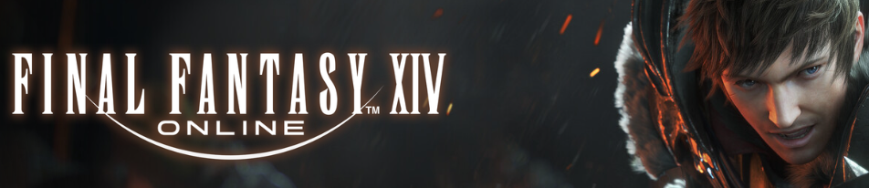

Welcome to My Game Reviews
Hey there! This is my little corner of the internet where I dive deep into the games that have captured my attention. Whether it's a story-driven indie gem, a chaotic multiplayer shooter, or a nostalgic classic from my backlog, you'll find my personal takes, honest ratings, and maybe even a few spicy opinions.
I don't just score games. I talk about how they feel, what they get right (or horribly wrong), and what moments stuck with me long after the credits rolled. If you're looking for thoughtful reviews with a bit of personality, you're in the right place.
Scroll down, find your next favorite game, and don't be shy - I love chatting about games, so feel free to reach out on social media too. Reviews update as I play more, so check back often!
Game Title: Final Fantasy XIV
Rating: 9/10
Platform: PC, Steam, Xbox, PS5
Genre: Fantasy, MMORPG, Open World
Time Played: ~5,000 hours; Ongoing
Quick Summary: Final Fantasy XIV is a massive, open-world MMORPG that offers a deep and engaging experience. The story is complex and well-written, with a focus on character development and world-building. The gameplay is balanced and offers something for everyone, from casual players to hardcore enthusiasts.
What I Loved:
- Deep and engaging story
- Beautiful art style
- Dynamic and evolving gameplay
- Strong community and player support
- Great character customization
- Excellent end-game content
- Constant updates and improvements
What Could Be Better:
- Some areas can feel repetitive
- The report system can be overwhelming
- Character design can be hit or miss
- Some characters can't wear certain armor
Would I Recommend It? Yes, I would recommend it to anyone who enjoys deep progression systems and a rich story. The story is entirely optional, so you can focus on the gameplay if you prefer. This is a great 'First MMO' for those who want to try the genre.
Game Title: The Elder Scrolls Online
Rating: 6/10
Platform: PC, Steam, Xbox, PS5
Genre: Fantasy, MMORPG, Open World
Time Played: ~2,500 hours; Completed
Quick Summary: Elder Scrolls Online is a massive, open-world MMORPG that offers a deep and engaging experience. The story is complex and well-written, with a focus on character development and world-building. The gameplay is balanced and offers something for everyone, from casual players to hardcore enthusiasts.
What I Loved:
- Entire story is voiced, and the voice acting is very good
- Rich lore and world-building from the Elder Scrolls universe
- Flexible class system allowing for diverse character builds
- Beautiful and diverse landscapes across Tamriel, allowing you to visit places you couldn't in previous games
- Extensive housing system with great customization options
- Regular content updates and expansions
- Active and helpful community
- Great crafting system with meaningful progression
What Could Be Better:
- The story is not for everyone, and can be very slow-paced
- The game can be very grindy at times, and the crafting system can be very confusing
- The game can be very expensive to play, with many microtransactions
- Lack of real depth to the combat, and the combat can get very repetitive
Would I Recommend It? No, I would not recommend it to anyone. The changes that have been made to the game have ruined the experience for me. I'm not sure if I'll ever return to the game. Maybe if they made all the microtransactions earnable in the base game, I would consider it.